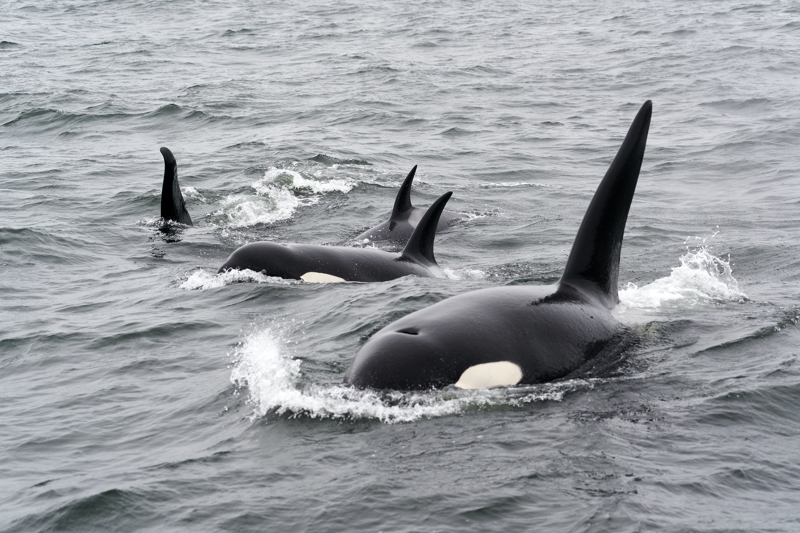

범고래
(학명: Orcinus orca, 영어: killer whale 또는 orca)는 참돌고래과에
속하는 고래 중 큰 종이자, 극지방에서 열대지방에 이르기까지 널리
발견되는 이빨고래이다. 영화 프리 윌리에 나오는 고래로도 유명하다.

범고래는 능동적인 포식자이다. 이들의 주식은 여러 가지가 있는데 물고기를 주로 먹는 무리 들이 있는가 하면 바다사자와 다른 고래를 포함한 젖먹이 동물을 사냥하 는 무리도 있다. 범고래는 크게 다섯 종류로 나뉘며 이들을 아종이나 다른 종으로 구분해야 한다는 의견도 있다. 범고래는 매우 사회적인 동물 이며 상당히 안정된 모계 사회를 형성하는 경우도 있다. 사회행동과 사냥 법 및 독특한 노래는 범고래들 특유의 문화를 보여 준다.
다른과의 고래들과는 다르게 범고래는 전 세계적으로 멸종위기에 놓이지는 않으나 몇몇 지역군에서는 존망 위기를 맞고 있는데 해양오염과 먹이의 감소, 어선과의 충돌이 그 원인이다. 야생범고래는 보통 인간에게 위협적인 존재 로 여겨지지는 않으나, 해양공원에서 사육된 범고래가 조련사 등을 공격한 사례는 몇 건 있다.